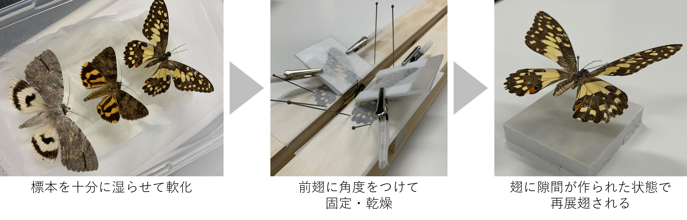

こちらは，蝶と蛾の標本を3次元モデリングしたものです．
本モデルは，標本の翅の形状に着目した手法により構築されています。
具体的な手順は下記のとおりです。
(1)多視点深度合成写真を撮影し、フォトグラメトリソフトによりカメラ位置と3D点群を構築する
(2)点群を胴体領域と翅領域に手作業で分割する
(3)翅領域の点群に、平面的なテンプレートメッシュをフィットさせメッシュを構築
(4)胴体領域の点群に、Ball pivotting法を適用しメッシュを構築
(5)深度合成写真を逆投影することでテクスチャを作成する
モデリング手法の詳細はこちら
また，本手法では翅1枚ごとの正確なモデリングのため、前翅と後翅に隙間をつくるように
再展翅を実施しています（下図参照）．
